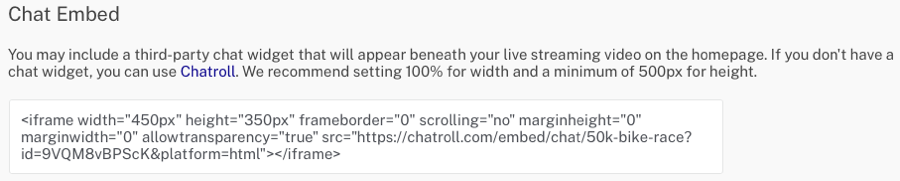

Creación del estado de evento en vivo para una experiencia de evento de portal
{{ page.description }}
La plantilla Live Event Portal proporciona plantillas de páginas de detalles de vídeo y pre-evento, evento en directo, post-evento, archivo de vídeo y detalles de vídeo. Estas plantillas de página se pueden personalizar para que el sitio tenga una apariencia diferente antes, durante y después de un evento en vivo. El estado del evento en vivo es lo que mostrará el sitio durante el evento en vivo.
Para crear el estado de la página de inicio del evento en vivo para un sitio, cree un nuevo portal experiencia usando la plantilla del Portal de eventos en vivo. En el Editor del sitio de la galería, haga clic en Paginas en el panel de navegación de la izquierda y luego haga clic en Página principal: Vivir.
El estado de la página de inicio del evento en vivo proporciona las siguientes áreas de contenido.
A - Logotipo y nombre de la casa - Se utiliza para devolver al espectador a la página de inicio. Aquí hay dos marcadores de posición, por lo que puede elegir tener una imagen seguida de texto, por ejemplo.
B - Enlace al archivo de video - Se utiliza para ver todas las colecciones de videos que se han creado para el sitio.
C - Configuración de Twitter - Ofrece la posibilidad de utilizar un widget de feed de Twitter. Ver Configurar un feed de Twitter.
D - Imagen de fondo - Se usa para agregar una imagen de fondo
E - Configuración de video en vivo - Se utiliza para configurar la identificación de video en vivo. Ver Configuración de video en vivo.
F - Nombre del evento en vivo - Mensaje de texto estático
G - Indicador "Happening Now" - Ocultar / mostrar el indicador "Pasando ahora"
H - Configuración de chat - Área opcional para incrustar el widget de chat de terceros (por ejemplo, Chatroll). Ver Configurar un widget de chat.
El sitio se puede configurar con una inserción de Twitter en la página. Para los tipos de incrustaciones disponibles, marque la Sitio web de Twitter. A continuación se muestra una muestra de la línea de tiempo de Me gusta.
Para agregar un feed de Twitter, siga estos pasos:
Haga clic en el Configuración de Twitter enlace en la página.
Copie el HTML del widget de Twitter y péguelo en el Feed de Twitter ajustes.
Hacer clic Ahorrar.
Configuración de video en vivo
Haga clic en el Configurar video en vivo enlace para configurar los ajustes de video en vivo con el ID de video o Identificación de referencia del recurso de video en vivo. Al usar la identificación de video, la experiencia deberá actualizarse con la nueva identificación de video cada vez que se cree un nuevo evento en vivo. El uso de una identificación de referencia proporciona más flexibilidad. Cuando se crea un nuevo evento en vivo, simplemente asigne la ID de referencia designada al nuevo video en el módulo de Medios y no se requieren cambios en la experiencia.
Ubicación de la identificación de video
La identificación de video se puede localizar mediante uno de los siguientes métodos:
La identificación del video aparece debajo del título del video en el módulo de Medios.
La identificación del video aparece debajo del nombre del evento dentro del módulo Live.
Ubicación de la ID de referencia
La ID de referencia se puede localizar utilizando el módulo de medios.
Configurar un widget de chat
El sitio se puede configurar para mostrar widgets de chat de terceros en una página. Por ejemplo, con Chatroll, puede incrustar código HTML en una página para añadir capacidades de chat en línea a un sitio de Galería. A continuación se muestra un chat de muestra.
Para agregar un widget de chat de terceros, siga estos pasos:
Haga clic en el configuraciones de chat enlace en la página.
Copie el HTML para el widget de chat y péguelo en la configuración de Chat Embed.
